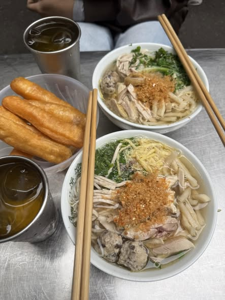

Trước đó, qua công tác nắm tình hình, Cục Cảnh sát điều tra tội phạm về ma túy (C04) phát hiện đường dây mua bán, vận chuyển trái phép chất ma túy từ nước ngoài vào Việt Nam quy mô lớn, liên quan nhiều đối tượng; hoạt động có tổ chức chặt chẽ, phân công vai trò rõ ràng, sử dụng mạng xã hội mã hóa để liên lạc, chia nhỏ khâu vận chuyển, giao nhận qua nhiều trung gian nhằm đối phó lực lượng chức năng.Trước đó, qua công tác nắm tình hình, Cục Cảnh sát điều tra tội phạm về ma túy (C04) phát hiện đường dây mua bán, vận chuyển trái phép chất ma túy từ nước ngoài vào Việt Nam quy mô lớn, liên quan nhiều đối tượng; hoạt động có tổ chức chặt chẽ, phân công vai trò rõ ràng, sử dụng mạng xã hội mã hóa để liên lạc, chia nhỏ khâu vận chuyển, giao nhận qua nhiều trung gian nhằm đối phó lực lượng chức năng.Trước đó, qua công tác nắm tình hình, Cục Cảnh sát điều tra tội phạm về ma túy (C04) phát hiện đường dây mua bán, vận chuyển trái phép chất ma túy từ nước ngoài vào Việt Nam quy mô lớn, liên quan nhiều đối tượng; hoạt động có tổ chức chặt chẽ, phân công vai trò rõ ràng, sử dụng mạng xã hội mã hóa để liên lạc, chia nhỏ khâu vận chuyển, giao nhận qua nhiều trung gian nhằm đối phó lực lượng chức năng.Trước đó, qua công tác nắm tình hình, Cục Cảnh sát điều tra tội phạm về ma túy (C04) phát hiện đường dây mua bán, vận chuyển trái phép chất ma túy từ nước ngoài vào Việt Nam quy mô lớn, liên quan nhiều đối tượng; hoạt động có tổ chức chặt chẽ, phân công vai trò rõ ràng, sử dụng mạng xã hội mã hóa để liên lạc, chia nhỏ khâu vận chuyển, giao nhận qua nhiều trung gian nhằm đối phó lực lượng chức năng.Trước đó, qua công tác nắm tình hình, Cục Cảnh sát điều tra tội phạm về ma túy (C04) phát hiện đường dây mua bán, vận chuyển trái phép chất ma túy từ nước ngoài vào Việt Nam quy mô lớn, liên quan nhiều đối tượng; hoạt động có tổ chức chặt chẽ, phân công vai trò rõ ràng, sử dụng mạng xã hội mã hóa để liên lạc, chia nhỏ khâu vận chuyển, giao nhận qua nhiều trung gian nhằm đối phó lực lượng chức năng.Trước đó, qua công tác nắm tình hình, Cục Cảnh sát điều tra tội phạm về ma túy (C04) phát hiện đường dây mua bán, vận chuyển trái phép chất ma túy từ nước ngoài vào Việt Nam quy mô lớn, liên quan nhiều đối tượng; hoạt động có tổ chức chặt chẽ, phân công vai trò rõ ràng, sử dụng mạng xã hội mã hóa để liên lạc, chia nhỏ khâu vận chuyển, giao nhận qua nhiều trung gian nhằm đối phó lực lượng chức năng.Trước đó, qua công tác nắm tình hình, Cục Cảnh sát điều tra tội phạm về ma túy (C04) phát hiện đường dây mua bán, vận chuyển trái phép chất ma túy từ nước ngoài vào Việt Nam quy mô lớn, liên quan nhiều đối tượng; hoạt động có tổ chức chặt chẽ, phân công vai trò rõ ràng, sử dụng mạng xã hội mã hóa để liên lạc, chia nhỏ khâu vận chuyển, giao nhận qua nhiều trung gian nhằm đối phó lực lượng chức năng.Trước đó, qua công tác nắm tình hình, Cục Cảnh sát điều tra tội phạm về ma túy (C04) phát hiện đường dây mua bán, vận chuyển trái phép chất ma túy từ nước ngoài vào Việt Nam quy mô lớn, liên quan nhiều đối tượng; hoạt động có tổ chức chặt chẽ, phân công vai trò rõ ràng, sử dụng mạng xã hội mã hóa để liên lạc, chia nhỏ khâu vận chuyển, giao nhận qua nhiều trung gian nhằm đối phó lực lượng chức năng.Trước đó, qua công tác nắm tình hình, Cục Cảnh sát điều tra tội phạm về ma túy (C04) phát hiện đường dây mua bán, vận chuyển trái phép chất ma túy từ nước ngoài vào Việt Nam quy mô lớn, liên quan nhiều đối tượng; hoạt động có tổ chức chặt chẽ, phân công vai trò rõ ràng, sử dụng mạng xã hội mã hóa để liên lạc, chia nhỏ khâu vận chuyển, giao nhận qua nhiều trung gian nhằm đối phó lực lượng chức năng.Trước đó, qua công tác nắm tình hình, Cục Cảnh sát điều tra tội phạm về ma túy (C04) phát hiện đường dây mua bán, vận chuyển trái phép chất ma túy từ nước ngoài vào Việt Nam quy mô lớn, liên quan nhiều đối tượng; hoạt động có tổ chức chặt chẽ, phân công vai trò rõ ràng, sử dụng mạng xã hội mã hóa để liên lạc, chia nhỏ khâu vận chuyển, giao nhận qua nhiều trung gian nhằm đối phó lực lượng chức năng.
Worldcup 2026 diễn ra tại Mỹ
Phở gà

| Stt | Tên | Ngày sinh | Điện thoại |
|---|---|---|---|
| 1 | Phạm Anh Tuấn | 02/11/2003 | 0868144055 |
| 1 | Phạm Anh Tuấn | 02/11/2003 | 0868144055 |